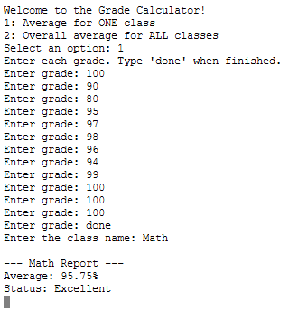

Grade Calculator
Project 1 • Web Application
This web application models weighted grading schemes so students can forecast their final course grades and understand how assignment scores affect outcomes.
Technical Stack
- HTML, CSS, JavaScript
- Bootstrap 5
- CodeHS web sandbox
Process & Challenges
I designed the user interface to clearly separate grade categories, weights, and score inputs, while keeping the calculation logic modular. I developed validation logic to reject invalid entries and recalculate the total score instantly whenever values changed.
The main challenge was ensuring the formula handled missing or incorrectly formatted values without displaying misleading results. I solved this by adding explicit input checks, user-friendly error messaging, and conditional rendering of the final grade output.

Screenshot from the CodeHS Grade Calculator project.